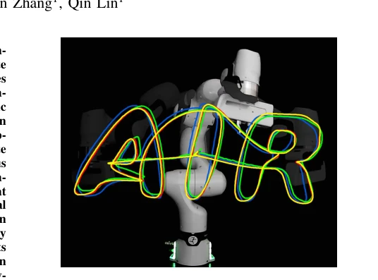
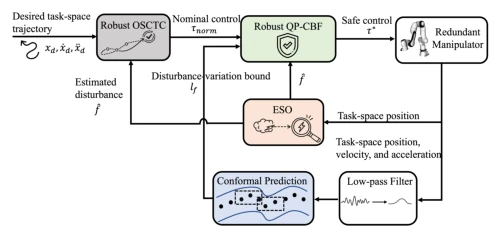
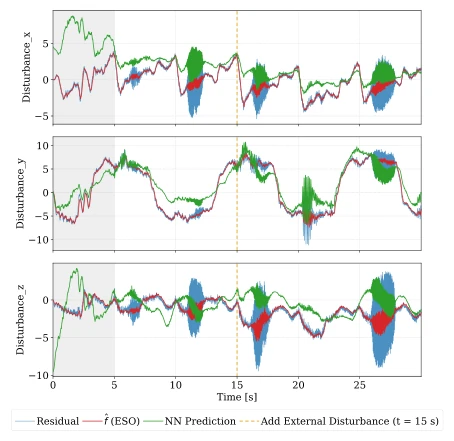
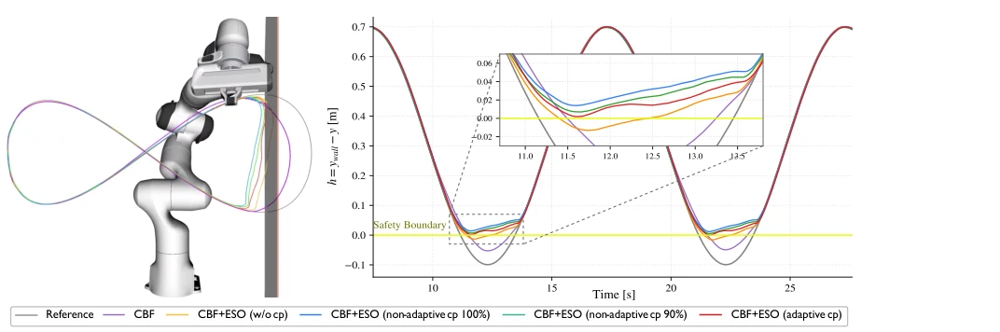
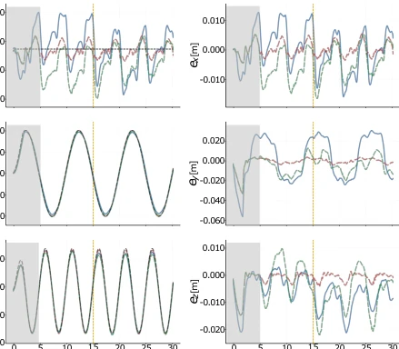

This paper attempts to address the safety control problem of redundant manipulators in dynamic environments. The core idea is to combine the classical Extended State Observer (ESO) with emerging Conformal Prediction. The advantages are obvious: ESO does not require differentiation, avoiding the pitfall of acceleration noise in residual learning, and its theoretical convergence is more reliable than purely data-driven methods. However, the disadvantages are also undeniable; Conformal Prediction relies on the 'exchangeability' assumption, yet in reality, manipulators under disturbances are often non-stationary, so is this assumption tenable? Additionally, although claiming millimeter-level accuracy, the experimental scenarios are relatively limited, mainly involving a swinging water bottle load; robustness in complex dynamic environments remains questionable. Overall, it is a very practical engineering improvement where theoretical 'absolute safety' becomes 'probabilistic safety', honestly facing uncertainty, but do not expect it to solve all nonlinear disturbances.
When redundant manipulators collaborate with humans, they must accurately track task-space trajectories while ensuring safety; these two goals often conflict under disturbances. Traditional Operational Space Computed Torque Control (OSCTC) [1] relies on precise models; once friction or load changes occur, performance deteriorates significantly. Data-driven residual learning [3] can learn disturbances, but requires full-state measurement, acceleration differentiation introduces large noise, lacks theoretical guarantees, and is easily affected by distribution shift. More problematic is that safety guarantees based on Control Barrier Functions (CBF) [11] typically require known disturbance variation bounds; for safety margins, these are often set very large, leading to overly conservative control where the robot is unable to move. The motivation of this paper is to reduce this conservatism without sacrificing safety, while avoiding residual learning's sensitivity to noise, achieving more flexible task-space control.

Fig. 1. Task-space trajectory forming the letters “AIR” under model uncertainty. Yellow: reference trajectory. Blue: conventional OSCTC without disturbance compensation [1]. Green: Residual learning. Red: proposed method, which has the minimum deviations caused by model mismatch in the hardware.
The overall framework proceeds in three steps. First is disturbance estimation, using task-space ESO to directly estimate the lumped disturbance in task space, relying only on position measurement, avoiding noise brought by numerical differentiation, and ensuring exponential error convergence through a Hurwitz observer. Second is boundary estimation; traditional methods using fixed bounds are too conservative; here sliding window conformal prediction is introduced to calculate the distribution-free upper bound of disturbance derivatives online, downgrading deterministic assumptions to probabilistic guarantees. Finally is safe control, constructing robust high-order CBF based on estimated disturbance and dynamic boundary, embedding safety constraints into a Quadratic Programming (QP) solver. The innovation lies in ESO eliminating dependency on velocity/acceleration, the CP mechanism allows safety boundaries to adaptively adjust with the environment, no longer requiring manual heuristic parameter tuning, achieving the combination of model robustness and data adaptability.

Fig. 2. Architecture of the proposed robust operational-space control framework integrating model-based robustness and data-driven uncertainty quantification.
实验Experiments
在 7-DoF Franka Research 3 机械臂上验证。对比了传统 OSCTC、残差神经网络和本文方法。实验加了水瓶负载模拟时变扰动，安全约束设为 y <= 0.3m。指标看轨迹跟踪均方误差（MSE）和安全约束违反情况。结果显示，本文方法 MSE 最低（1.712e-05），优于残差学习（7.531e-05）。安全方面，传统 CBF 会越界，固定边界 CBF 太保守，本文的自适应共形预测在保证安全的同时，约束区间更窄，实时性达到 1kHz。消融实验表明，去掉共形预测会导致安全违反，证明其必要性。
Validated on a 7-DoF Franka Research 3 manipulator. Compared traditional OSCTC, Residual Neural Network, and the proposed method. Experiments added a water bottle load to simulate time-varying disturbances, safety constraint set to y <= 0.3m. Metrics examined trajectory tracking Mean Squared Error (MSE) and safety constraint violation conditions. Results show the proposed method has the lowest MSE (1.712e-05), outperforming residual learning (7.531e-05). Regarding safety, traditional CBF violates bounds, fixed-bound CBF is too conservative; the proposed adaptive conformal prediction ensures safety while maintaining a narrower constraint interval, with real-time performance reaching 1kHz. Ablation studies indicate that removing conformal prediction leads to safety violations, proving its necessity.

Fig. 5. Hardware disturbance estimation under external disturbance (sloshing payload attached at t = 15 s, see the vertical dashed yellow lines). The ramp-in phase in the first 5 seconds is colored in grey.

Fig. 6. Hardware safety validation. Left: RVIZ visualization of the physical robot and the safety boundary. Right: Safety function h(x).
Fig. 3. Disturbance estimation in simulation environment.

Fig. 4. Hardware trajectory tracking under external disturbance (left: trajectory tracking; right: tracking error; sloshing payload attached at t = 15 s, see the vertical dashed yellow lines). The ramp-in phase in the first 5 seconds is colored in grey. Overall mean-square error (MSE, unit [m]): Conventional OSCTC: 2.033e−04, Ours: 1.712e−05, Residual NN: 7.531e−05.